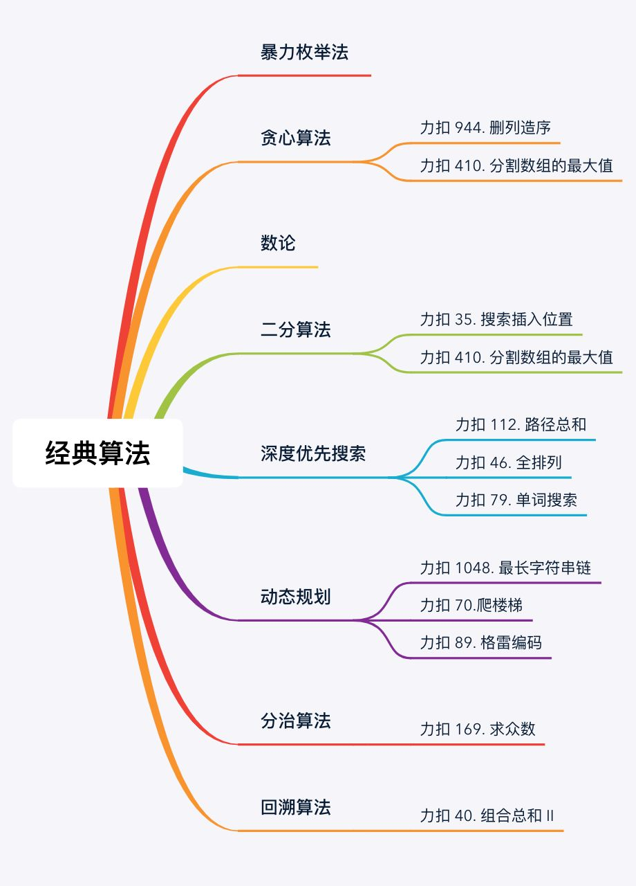
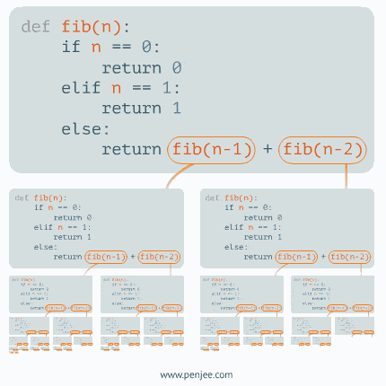
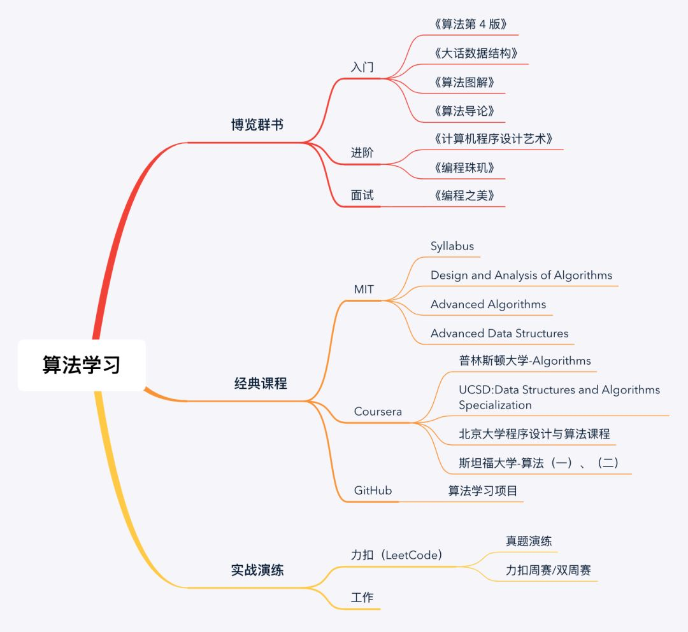

本文转载自公众号：力扣LeetCode。
王国维先生在《人间词话》中写道：
古今之成大事业、大学问者，必经过三种境界：“昨夜西风凋碧树。独上高楼，望尽天涯路。”此第一境也。“衣带渐宽终不悔，为伊消得人憔悴。”此第二境也。“众里寻他千百度，蓦然回首，那人却在，灯火阑珊处。”此第三境也。
算法的学习之道也是如此。
1. 夯实根基
在最初的阶段，算法世界的大门刚刚打开，这个时候迷茫是正常的，解决迷茫的要诀在于少想多做，勇往直前。怀着一颗”千磨万击还坚韧，任尔东西南北风”的恒心，爬上算法的高楼，做到”望尽天涯路”。
从一个算法萌新入门，第一步便在于打牢根基。推荐阅读书籍：
《算法第 4 版》- Robert Sedgewick
《大话数据结构》- 程杰
《算法图解》- Aditya Bhargava
《算法导论》- Cormen,T.H.
《算法第 4 版》适合初学者入门、《大话数据结构》和《算法图解》这两本书的特点是有趣、易理解，也非常适合初学者。《算法导论》的特点是全面，它是一本算法的百科全书，着重在于开阔算法视野，适合有一定算法基础后再去学习。
入门阶段是看一些天赋的，花费时间因人而异，大约在 3～6 月之间，将上述提到的书籍选择其中一本看完基本就能入门了。在这个阶段中，需要了解几类常用的算法：
其中，暴力枚举、贪心算法容易理解，可以很快上手。数论相关的算法需要用到一些数学技巧，包括位运算、幂函数、求模等等性质。二分算法和深度优先搜索算法相对有些技巧性，好在他们都有固定的模板。另外，不得不提的是，深度优先搜索算法的思想非常重要，而且深度优先搜索是动态规划、分治和回溯的基础，需要重点掌握。
在此过程中，可以辅以力扣中的简单题目，它们往往都代表了一类经典算法，如：
| 题目链接 | 题目描述 |
|---|---|
| 70. 爬楼梯 | 动态规划 算法的经典题目，通过此题目可以了解状态、边界条件、状态转移方程等基本概念。 |
| 112. 路径总和 | 深度优先算法 的入门题目，递归实现和迭代实现都不难，可以学习到深度优先算法的层层嵌套搜索、找到答案或到达边界停止的基本解题思路。 |
| 35. 搜索插入位置 | 二分算法 的典型题目，使用二分算法的解题模板可以轻松解决，二分算法的算法思想清晰明确，一通百通。 |
| 169. 求众数 | 分治算法 的简单题目，如果我们知道数组左边一半和右边一半的众数，我们就可以用线性时间知道全局的众数是哪个。这道题妙就妙在可以有多种解题方式，让初学者至少可以写出暴力枚举算法 AC 题目，然后再逐步深入，优化算法。 |
| 944. 删列造序 | 这是一道 贪心算法 的简单题目，贪心算法理解简单，上手容易，适合作为初学者掌握的第一个算法。 |
2. 融会贯通
学习算法理论如同阅读了一本武功秘籍，然而仅仅掌握理论是不够的，接下来就要进入到实际练习阶段。
实战练习非常重要，不经过实战练习，理论仅仅是纸上谈兵。比如，不经过大量练习，永远不会知道二分算法是多么容易出现死循环。一个边界条件控制不好，程序就会显示无情的”Time Limit Exceeded”。在 20 分钟的调试后，或许仅仅是将 while (left <= right) 改为了 while (left < right) 。程序员说到底也是手艺人，这一个字符的改动，正是”台上一分钟，台下十年功”的体现，需要在大量的练习中才能理解两者之间的不同作用。
再比如，动态规划算法中，递归的函数就像是《盗梦空间》中的”梦中梦”，一层套一层，又渐次展开，很难整体把控。在不断的练习后，才会知道，动态规划算法的重点是抓住动态转移方程，只处理两个状态之间的过渡和边界条件，慢慢”大事化小，小事化了”。
这一阶段花费的时间将会很长很长，伴随着不断地摔倒、爬起，你会对每类算法逐渐融会贯通。好在这一阶段是不看天赋只看勤奋的，每次从坑里爬起，都是献给成长的一份力量。
推荐的进阶书籍有《编程珠玑》，本书探讨了程序设计人员面对一系列的实际问题以及解决问题的措施（解决方案的代码以 C/C++ 语言编写）。书中选取了许多具有典型意义的复杂编程和算法问题，并阐述和总结了许多独特精妙的设计原则、思考和解决问题的方法以及实用的程序设计技巧。
在这个阶段，可以尝试练习力扣上的中等题目，中等题目基本上也只会使用一种算法，加上一些特殊的限制，好比让你在学习了直拳的理论后衍生出左勾拳和右勾拳。推荐练习题目有：
| 题目链接 | 题目描述 |
|---|---|
| 1048. 最长字符串链 | 分析题目可知，要求出答案必须遍历所有可能的词链，动态规划算法在其中起备忘录的作用，用于记录已经算过的答案，减少计算次数。 |
| 47. 全排列 II | 这道题是 46. 全排列 （使用深度优先搜索算法）的加强版。有两种方法可解：第一种方法最简单，直接用全排列 I 的答案去重即可；第二种方法是先将数组排序，全排列时遇到重复数字则跳过，这样的剪枝优化可以减少遍历次数，提高算法效率。 |
| 40. 组合总和 II | 深度优先搜索算法衍生出来的 回溯算法，同样用到 47 题的剪枝优化思想：相同数字只允许递归第一个。 |
| 89. 格雷编码 | 动态规划 算法的实际应用之一。 |
| 79. 单词搜索 | 深度优先搜索 的中级应用，使用单独数组标记已使用过的元素，这也是 DFS 中较为常见的做法，难点在于将标记数组复原的时机，需要反复练习，熟练掌握。 |
当你把每一类算法的中等题目刷起来得心应手时，不妨开始尝试困难题目的练习。困难题目总是融合两种或两种以上算法，或是加深难度的经典算法，如二维甚至三维动态规划。练习困难题目好比同时用上左勾拳和扫堂腿，不仅让思维酣畅淋漓，在每次 AC 之后还会带来无与伦比的成就感。推荐练习题目有：
| 题目链接 | 题目描述 |
|---|---|
| 679. 24 点游戏 | 只有 4 张牌，且只能执行 4 种操作。即使所有运算符都不进行交换，最多也只有 12∗6∗2∗4∗4∗4 = 9216 种可能性，这使得我们可以尝试所有这些可能，如果用深度优先搜索算法则需要费一番功夫。 |
| 124. 二叉树中的最大路径和 | 首先，考虑实现一个简化的函数：计算每个节点及其子树对路径和的最大贡献。再考虑第二点：最大路径不一定包括根节点。这意味着我们在每一步都检查哪种选择更好：是继续当前路径或者以当前节点作为最高节点计算新的路径。 |
| 410. 分割数组的最大值 | 二分算法 和 贪心算法 的综合练习，仔细分析可知其单调关系：数组和的最大值越小，分组数越大。并且数组和的范围是可以确定的。根据此特性，可以将题目转换为：当子数组的和最大为 maxSum 时，至少需要分多少组，能否在最多 m 组的限制范围内完成分割。在每次分割时，采用贪心策略，尽可能多的放置元素，直到一组放不下，再另起一组。如果满足分割条件，记录当前值，利用二分法，缩小子数组总和。否则扩大子数组总和，直到找到最佳答案。 |
3. 推陈出新
事实上，大量程序员停留在第二重境界就无法再进一步。当提到某一类算法时，你可以说：”我知道”、”我会用”、”踩过坑”，但能说出”我完全理解其思想”、甚至”我能想办法改进”的人却很少很少。这一步仿佛武学中的攻守之道，当你掌握到这一层，便可不再拘泥于一刀一剑、一招一式，如金书中所说：飞花摘叶皆可伤人、草木竹石均可为剑。
开创算法的过程是艰难又孤独的。每一个经典算法的诞生都伴随着”一将功成万骨枯”。比如现在我们在很多语言中都可以直接调用 Collection.sort() 实现快速排序，而在快速排序算法出现之前，曾有一段时间仅有冒泡、选择、插入三种排序算法。直到 1959 年，希尔提出”希尔排序”算法，或许现在知道此算法的人已经很少了。但它是首个突破 $O(n^2)$复杂度的排序算法，它的基本算法思想如下：
选择一个增量序列 t1，t2，…，tk，其中 ti > tj， tk = 1；按增量序列个数 k，对序列进行 k 趟排序；每趟排序，根据对应的增量ti，将待排序列分割成若干长度为 m 的子序列，分别对各子表进行直接插入排序。仅增量因子为 1 时，整个序列作为一个表来处理，表长度即为整个序列的长度。
动图演示如下：

希尔排序算法较为晦涩难懂，而且并不是最优的排序算法，现在已经被后来的快速排序算法给淘汰了。然而不可否认希尔对排序算法的演进具有开创性贡献，在攀越算法高峰的路上，每一步都走得战战兢兢，我们只有铭记这些伟大的引路人，以此激励自己不断前行。
算法世界不尽完美。不仅有经典算法在前奠基，后起之秀遗传算法、深度学习算法也熠熠生辉。算法世界还有许多”所罗门王的宝藏”，一直静静地守候在”灯火阑珊处”，等待着人们去发掘。
4. 学习方法
我给大家整理了一个学习计划，可以保存下图进行学习：
